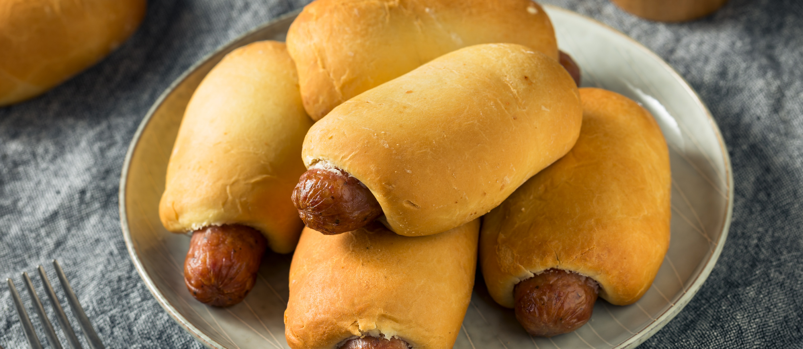

Klobasnek is a savory snack that was first made by Czechs who settled in Texas. The snack consists of the same dough that's used to make kolaches, but it is filled with a kielbasa sausage instead of fruit. It is believed that the first klobasnek (plural: klobasniky) was made in 1953 in The Village Bakery, located in the town of West, Texas.
Meal prep time : 2 hours 30 minutes
Servings : 12